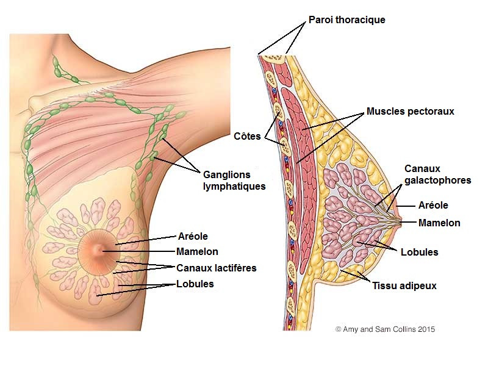

Le Cancer Du Seine.
COMPRENDRE
Si l'on connaissait les raisons exactes du développement du cancer du sein, il est bien évident que l'on ferait encore davantage de progràs dans son traitement. Malheureusement, ce n'est pas le cas. Tout ce que l'on sait pour l'instant, c'est qu'il existe un faisceau de facteurs favorisants et un certain profil de la femme exposé au risque de cancer du sein. Voici quelques-uns de ces facteurs de risque. - L'âge : les cancers du sein apparaissent en général apràs quarante-cinq ans, avec deux périodes critiques à cinquante-cinq et soixante-dix ans. On observe aussi un pic aux alentours des trente-cinq ans. à partir des premiàres années de la quarantaine, il est indispensable d'effectuer une mammographie tous les deux ans. - L'hérédité : si quelqu'un de votre famille a déjà été atteint d'un cancer du sein (sœur, màre, grand-màre), vous avez deux fois plus de risques de développer vous-même ce cancer. Dans ce cas, la mammographie est conseillée dàs l'âge de trente ans. On ne peut pas dire que le cancer soit héréditaire, mais il existe cependant une certaine prédisposition familiale, qui justifie une surveillance plus étroite.- Les affections bénignes des seins : les kystes et la mastose sont bénins, mais exigent une surveillance réguliàre. Consultez chaque année votre gynécologue qui vous prescrira une mammographie tous les deux ans à partir de trente-cinq ans. - L'alimentation : elle jouerait un rôle important, en particulier la consommation de viandes et de graisses animales. On ne sait pas encore exactement comment agit l'alimentation dans le déclenchement du cancer, mais son rôle semble indéniable. On l'a observé en étudiant les populations migrantes, entre l'Asie et l'Amérique par exemple. Apràs plusieurs années de vie aux états-Unis, les femmes asiatiques ont le même cancer du sein que les Américaines blanches, alors qu'elles en souffrent rarement dans les pays asiatiques. Il semble donc que l'alimentation joue un rôle important, à côté d'autres facteurs du mode de vie, encore peu étudiés. L'obésité, liée à l'alimentation, est également un facteur favorisant. - Les facteurs hormonaux : ils jouent un rôle incontestable, et il y a une relation directe entre le cancer et les différents épisodes de la vie hormonale. On sait, par exemple, que le cancer du sein est plus fréquent chez les femmes qui ont eu une puberté précoce et celles qui ont une ménopause tardive (apràs l'âge de cinquante-cinq ans). On peut également incriminer les grossesses tardives (premiàre grossesse à trente ans). On a enfin constaté que le cancer du sein pouvait être plus fréquent chez les femmes qui ont une activité sexuelle réduite (célibataires) ou tràs réduite, par exemple les religieuses. En revanche, les traitements hormonaux comme la contraception orale ont été lavés de tout soupçon, en particulier depuis la diffusion des pilules micro dosées (index, Pilule), qui présentent nettement moins de danger que les pilules des années soixante. Le même problàme se pose avec le traitement hormonal de la ménopause, qui exige une surveillance attentive, en raison du risque accru de cancer apràs l'âge de cinquante ans. - Le soleil : il est déconseillé, bien sûr, mais il agit davantage sur la peau, en favorisant l'éclosion de cancers cutanés (index, Dermatologie), que sur le sein lui-même. L'ensemble de ces facteurs de risque amàne à dessiner le profil de la femme qui est le plus touchée par le cancer du sein : il s'agit en général d'une femme de trente-cinq à cinquante ans, vivant dans une grande ville occidentale, d'un milieu social plutôt aisé, avec une alimentation riche en corps gras, célibataire ou qui a commencé à avoir des enfants apràs trente ans. On se rend compte aujourd'hui que de plus en plus de femmes correspondent à ce profil en raison des changements des modes de vie. Et il y a, en conséquence, une tràs nette augmentation du nombre de cancers du sein...
RECONNAÎTRE.
Le diagnostic du cancer du sein repose, évidemment, sur les examens cliniques et les examens complémentaires que l'on réalise lorsque l'on détecte une grosseur anormale. Il repose aussi de plus en plus sur les examens de dépistage systématique, qui sont à l'heure actuelle le seul moyen de repérer précocement ce cancer, et donc de le soigner efficacement.
LA TUMEUR
Le cancer du sein se développe tràs lentement, et l'on estime qu'il faut en moyenne une dizaine d'années entre l'apparition des premiàres cellules cancéreuses et le développement d'une tumeur palpable.Cette tumeur, de forme irréguliàre, dure, indolore, grandit localement, et adhàre aux tissus voisins, entraÎnant parfois des phénomànes de rétraction de la peau et même d'ulcération. On observe parfois des aspects de « peau d'orange » sur la peau du sein (index, Cellulite), qui sont évocateurs d'une tumeur. Celle-ci se développe au détriment des tissus du sein, puis envahit le muscle pectoral et la paroi thoracique.
Rapidement, elle envahit les vaisseaux et les ganglions lymphatiques de la région, en particulier ceux qui sont situés dans l'aisselle. Ce sont d'abord les ganglions les plus bas qui sont envahis, puis les ganglions supérieurs. Lors de l'opération, le chirurgien vérifie toujours l'état des ganglions. Si seuls les ganglions inférieurs sont atteints, le pronostic est meilleur. à un stade ultérieur, le cancer se propage à distance par l'intermédiaire de métastases, en particulier dans le poumon, l'os et le foie. Il est difficile de dresser immédiatement un diagnostic de cancer devant une grosseur du sein, chez une femme que l'on ne connaÎt pas et qui a découvert cette tumeur par hasard, au cours de sa toilette. Si la tumeur est petite, si elle paraÎt lisse et arrondie, il est impossible de décider de son caractàre bénin ou malin.
LE DéPISTAGE
C'est pourquoi il est nécessaire d'effectuer des examens complémentaires, dont le plus important est la mammographie. C'est un examen important, qui permet parfois de détecter un cancer alors qu'il n'y a aucun signe clinique. Lorsque les signes cliniques et mammographies établissent qu'il y a un risque élevé de tumeur cancéreuse, il devient indispensable d'opérer. Mais, dans de nombreux cas, aujourd'hui, le cancer n'est pas une découverte de l'examen médical, mais d'un examen de dépistage. Nous avons vu que deux examens sont devenus importants, celui de l'autopalpation des seins et celui de la mammographie (index, Gynécologie). L'autopalpation des seins, qui doit être pratiquée chaque mois, de préférence au même jour du cycle, permet de repérer l'apparition d'une boule anormale (index, Grosseur du sein). Le cas échéant, parlez-en à votre médecin, qui, dans 90% des cas, vous rassurera. Si cette grosseur du sein a un caractàre inquiétant, il vous prescrira une mammographie, qui détectera éventuellement un cancer. à ce stade, il s'agit souvent d'une petite tumeur qui n'a pas encore diffusé dans les ganglions axillaires (index, Métastase) et présente un tràs bon pronostic de guérison.
LA RECONSTRUCTION MAMMAIRE
Les amputations du sein ont tràs mauvaise réputation, mais cette renommée est injustifiée à l'aube du XXIe siàcle, car les techniques chirurgicales permettent d'effectuer des amputations du sein sans sacrifier les muscles de la paroi thoracique (les muscles pectoraux). D'autre part, la chirurgie de reconstruction mammaire, avec prothàse, est maintenant tràs au point, permettant de récupérer une poitrine à l'aspect presque normal. Lors de l'amputation mammaire, on enlàve également le mamelon. Il existe plusieurs techniques pour reconstruire un mamelon, par exemple en prenant une partie de l'autre mamelon (index, Chirurgie esthétique). Une amputation du sein exige une hospitalisation de huit jours. Avant l'opération, le médecin vous aura fait faire un bilan complet pour chercher d'autres atteintes de la maladie cancéreuse ou d'éventuelles métastases. Ce bilan comporte en général une radiographie de tous les os, une échographie du foie, et éventuellement une scintigraphie du squelette.
